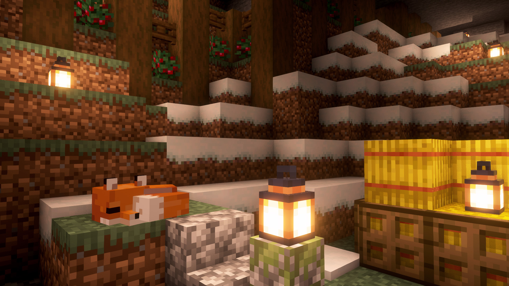

I've been creating content for as long as I can remember—starting with cringey Fortnite streams on Instagram and evolving into building my first YouTube channel, Twitch streams, and funny highlights. Along the way, I've experimented with names like “Yangers” and “Subspace” before landing on “Mantra,” inspired by one of my favorite songs. Content creation is my way of expressing myself, even though I'm still learning and growing. It's been a challenging journey, but I'm passionate about improving, and I'm determined to keep going—this time with a name that truly feels like me.
The first time I did anything for an audience was when I pointed my phone's camera at my lousy laptop's screen and played Fortnite on Instagram live. Oh god, it was terrible, but we all start somewhere.
Okay, I lied. It was probably actually some piano recital I had when I was 6, but you get the idea.
I've always been drawn to creating content—mostly about video games. Growing up, I was inspired by gaming YouTubers, and by middle school, I was uploading videos about anything and everything to anywhere I could. I guess you could say I've always been fascinated by the idea of sharing experiences and entertaining people.
Things really kicked off when I built my first PC around 10th grade. It gave me the processing power I needed to record gameplay, edit videos, and stream effectively. That's when I created my first YouTube channel, calling it Yangers.
I distinctly remember a friend helping me come up with that name in middle school band class. Obviously, it's based on my last name Yang.
Those early videos? Let's just say they were a learning experience. I eventually took them down because I couldn't stand to watch them. My equipment wasn't great, my voice was squeaky, and my editing skills were… developing. Still, those years taught me a lot about content creation. I started streaming on Twitch during the same time, experimenting with turning stream highlights into (hopefully) funny YouTube videos.
A couple of years later, I decided the name “Yangers” no longer felt right. I wanted something that resonated more with who I was, so I rebranded. Enter Subspace.
At the time, I was studying linear algebra, and the concept of a subspace—something that fulfills certain mathematical properties—at the time, I was an omega-nerd.
It wasn't more than a year later than when I realized I didn't like my online name again. Generally I know I was struggling with my identity (honestly, I still am, and let's be real, aren't we all). Some people made sexual jokes about being a “sub” and such, and so came name change 3.
The inspiration for this name came from one of my favorite songs by one of my favorite bands, Bring me the Horizon. It's got a really catchy bass line.
And my new profile picture? A sleeping fox in Minecraft, because foxes are cute. And Minecraft is cool.
And that's where we are now. Honestly, I still have no idea what I'm doing, I just make whatever I think is cool or entertaining and go with it. I try to design funny variety streams and new ideas to make into YouTube videos. Entertainment, comedy, it's all an art form, and I recognize I'm not good at it yet. If I were, my stats would probably be better. But it's a slow process, and I'm a very stubborn person, and it's a skill that I want to have. Of course I've felt like giving up at times and I've doubted myself more times than I can count. But I know I'm passionate about it. Content creation for me is a way to express myself. And growing as a creator and a person. And I feel like I've finally found something that has been so challenging for me that if I can do this, I can do anything. So I'll keep going. And honestly, I really like this name. I actually think I'll stick with it.■